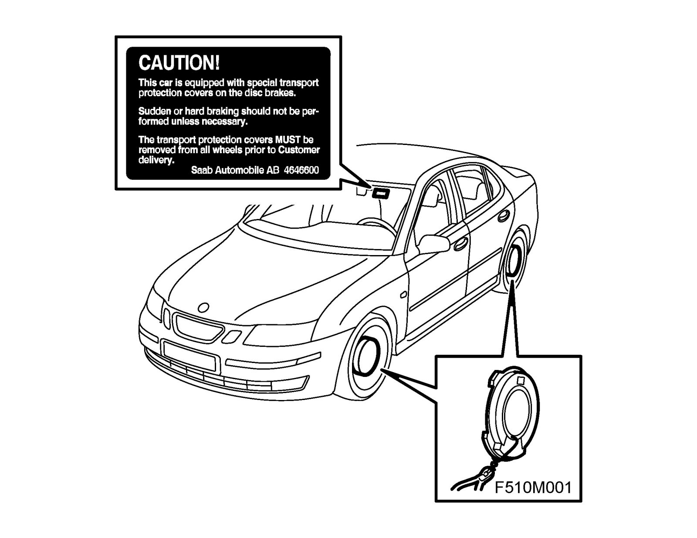

Removal and Replacement
Transport covers, brake discs
1. Separate the brake disc transport covers by pulling the wire from the outside through a hole in the wheel using pliers.
2. Remove the cover from the inside of the wheel without removing the wheel.
3. Remove the label from the windscreen.